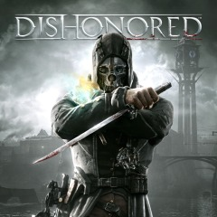

Dishonored 1 |
||
|---|---|---|
|  | Sinopsis: Dishonored, se sitúa en el trasfondo de la ciudad de Dunwall y su plaga de ratas; siguiendo la historia de Corvo Attano, el último guardaespaldas de la emperatriz, que es falsamente inculpado de su muerte y encarcelado a manos de Lord Regente, su usurpador. Impulsado por la venganza, y ayudado por una congregación de gente leal a la antigua emperatriz, se escapa la prisión, y se convierte en un asesino, eliminando a los usurpadores que se han hecho con el poder e intentando encontrar a la hija secuestrada de la emperatriz, Emily Kaldwin. |
Desarrollador:Arkane Studio Plataformas: PlayStation 3, Xbox 360, PlayStation 4, Xbox One, Microsoft Windows Año: 2012 Duracion:20 horas aprox Pais:Estados Unidos |
Criticas Profesionales:Borja AbadieVerdadera libertad de acción, rejugabilidad máxima, un apartado artístico espectacular, ambientación soberbia, historia atractiva, sigilo y acción,... Dishonored tiene tantas cosas buenas que no nos caben en esta valoración. |
Trailer |
Obtener:AlquilarComprar |
Registrate/Iniciar Sesion